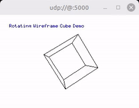

TinyGPU is a lightweight Arduino graphics library for RGB565 bitmap surfaces, sprites, and simple 3D wireframe rendering.

RGB565 is a compact 16-bit color format that stores red in 5 bits, green in 6 bits, and blue in 5 bits. It is widely used by small TFT, LCD, OLED, and other embedded display controllers because it needs much less memory and bandwidth than 24-bit RGB while still providing good visual quality for many graphics applications.
Apart form RGB565 we also support RGB666, RGB888 and Monochrome.
Features
- RGB565, RGB666, RGB888 and Monochrome color
- In-memory bitmap surfaces
- Basic drawing primitives
- pixels
- lines
- rectangles
- circles
- rounded rectangles (outline and fill)
- arcs (for circular progress/spinner style widgets)
- Bitmap font rendering
- Wrapped line printing
- Sprite drawing and sprite-aware framebuffer management
- add
- move
- scale
- rotate
- Basic 3D wireframe rendering
- transforms
- camera / view matrix
- perspective and orthographic projection
- minimal depth-buffered line rendering
- BMP file support
- saving data
- loading data
- JPEG file support via JPEGParser, decoding baseline JPEGs with the optional TinyJPEG library
- TouchDriverSDL: maps the desktop mouse to a TouchDriver, so touch-driven UI can be exercised on the SDL desktop backend without touch hardware
- LVGLDriver: use this library to output data from the lvgl library
- LCDBoard: one-call setup (display + touch, and I2S pins where present) for ESP32(-S3/-P4) boards from the arduino-audio-tools Audio Boards wiki
- ESP32-S3 2.8" Display (FBBA0125-002 / ESP32-S3 Hosyond Display) - Guition ESP32-S3 4.3" Capacitive Touch Display (JC4827W543C_I)
- ESP32 Arduino LVGL WiFi&Bluetooth 2.4" LCD (ESP32-2432S028R / ESP32 Cheap Yellow Display) - Guition ESP32-P4 4.3" 480x800 Capacitive Touch Display (JC4880P443C_I_W)
- Arduino example sketches
Overview
TinyGPU is designed as a small in-memory rendering layer that stays independent from any specific display driver. You render into RGB565 memory first and then forward the resulting pixel data to your own hardware-specific output code.
The library covers three main areas:
- 2D drawing and text rendering for compact embedded displays
- sprite-oriented composition and transforms for UI and simple animation
- lightweight 3D wireframe rendering for visualizations and demos
Documentaion
- Class Documentation
- Wiki
- [Examples](examples)
Installation
For Arduino, you can download the library as zip and call include Library -> zip library. Or you can git clone this project into the Arduino libraries folder e.g. with
For CMake-based projects (desktop, PlatformIO, ...), CMakeLists.txt provides a TinyGPU INTERFACE target, fetched via FetchContent - see examples/*/CMakeLists.txt.
For ESP-IDF, TinyGPU is also usable as a component: clone it as components/TinyGPU (or add its parent directory via EXTRA_COMPONENT_DIRS) and idf_component_register/idf_component.yml take care of the rest. Some headers (Input/TouchDriverArduino.h, Boards/LCDBoardsESP32.h, ...) call into the Arduino API (delay/pinMode/digitalWrite/SPIClass/TwoWire) via TinyGPU/Emulation/EmulationIDF.h - that header uses arduino-esp32 automatically when it's present as a component in the same build (uncomment the dependency in idf_component.yml if you want that), and otherwise falls back to a small ESP-IDF-native emulation of that surface (driver/gpio.h, driver/spi_master.h, driver/i2c.h, esp_timer) - see that header for exactly what is and isn't covered.